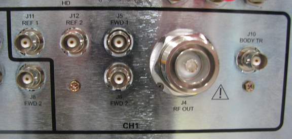
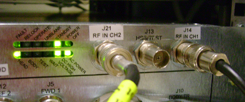
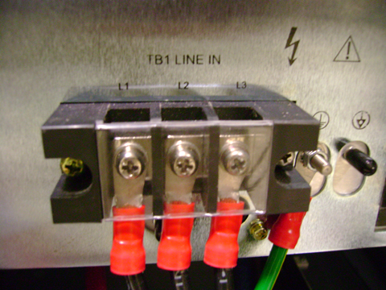
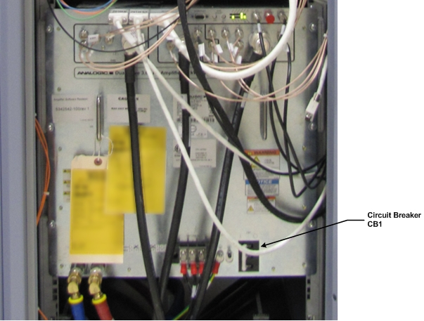

- 00000018WIA30974E20GYZ
- id_131057823.6
- Dec 9, 2022 6:52:40 PM
Dual drive RF amplifier troubleshooting
Overview
The solid-state, water-cooled dual drive RF amplifier accepts two independent RF inputs from independent digital exciter (DTX) units to produce the dual drive body and single drive head RF outputs. The channel 1 DTX signal input at RF amplifier J14 provides RF drive for the body channel 1 RF output when the amplifier is in body mode, and head RF output when the amplifier is in head mode. The channel 2 DTX signal input at RF amplifier J21 provides RF drive for the body channel 2 RF output when the amplifier is in body mode. A single unblank signal input at RF amplifier J20 is used to control the dual body output ports. Each body output channel port is capable of 15 kW peak envelope power at 127.72 MHz while the head port is capable of 4.5 kW peak envelope power at 127.72 MHz.
The amplifier has two discrete step digital rotary encoders used for RF gain adjustment. One digital encoder is shared between body channel 1 and the head gain adjustment, depending on whether the amplifier is in head or body mode. The other is used for body channel 2 gain adjustment only.
In dual drive configuration, the driver module provides a single body TR bias signal to the RF amplifier. The amplifier couples this single bias signal onto the channel 1 and 2 body transmit outputs. Therefore, both body channel 1 and 2 transmit cables carry both RF plus DC. The new driver configuration file sets the limit in body mode so that the system can detect an open or short circuit caused by either transmit output; however, because the same TR bias signal is used for both channels, the system cannot indicate which channel is failing. A single head TR bias signal is provided by the driver module for the head transmit circuit. This design is the same as previous products equipped with single drive RF technology.
The designs of both the dual and single drive RF amplifiers aim to achieve the lowest possible SWR (standing wave ratio). The dual drive RF amplifier dissipates any reflected power from the body channels as heat through an internal RF circulator. The single drive RF amplifier uses an external dummy load to deflect any reflected waves.

The RF amplifier communication interface is based on the CAN open protocol to provide enhanced transfer of information to the system. The CAN link provides communication to/from the amplifier from the scan control processor (SCP). The amplifier I/F (AIF) board provides unblank control, emergency shutdown, and a rudimentary secondary control link to the dual drive RF amplifier.
Diagnostic RF, voltage, and temperature sensors are located in various sections of the RF amplifier. Diagnostic tools gather data from these sensors during scanning. This data can then be used to help assess the condition of the head and body transmit circuit as well as the general health of the RF amplifier. The RF amplifier is designed to be a single replaceable FRU. Unlike the single drive amplifier, the dual drive RF amplifier does not contain any replaceable internal FRUs.
For information about the design and function of dual drive technology, see Dual Drive Theory.
For replacement information about the dual drive RF amplifier, see Dual Drive RF Amplifier Replacement.
Connector layout
The dual drive RF amplifier has three banks of connectors: CH1 (body channel 1), CH2 (body channel 2), and Head. There are also communication connectors, A/C power connectors, and two coolant connectors.

Connectors for CH1 (body channel 1)
Table 1 lists the connectors for channel 1 on the dual drive RF amplifier.

| Designator | Chassis Label | Description | Connector Type | Signal Type |
| J11 | BODY REF 1 | Body reflected RF power sample | BNC female | Low level RF |
| J12 | BODY REF 2 | Body reflected RF power sample | BNC female | Low level RF |
| J5 | BODY FWD 1 | Body forward RF power sample | BNC female | Low level RF |
| J6 | BODY FWD 2 | Body forward RF power sample | BNC female | Low level RF |
| J4 | BODY FWD OUT | Body RF power out | 7/16 DIN female | High power RF with TR bias |
| J10 | BODY TR | Body TR bias input | BNC female | Switching DC control |
Connectors for CH2 (body channel 2)
Table 2 lists the connectors for channel 2 on the dual drive RF amplifier.

| Designator | Chassis label | Description | Connector Type | Signal Type |
| J25 | BODY REF 1 | Body reflected RF power sample | BNC female | Low level RF |
| J26 | BODY REF 2 | Body reflected RF power sample | BNC female | Low level RF |
| J24 | BODY FWD 1 | Body forward RF power sample | BNC female | Low level RF |
| J23 | BODY FWD 2 | Body forward RF power sample | BNC female | Low level RF |
| J22 | BODY FWD OUT | Body RF power out | 7/16 DIN female | High power RF with shared body TR bias provided from J10 |
Connectors for head
Table 3 lists the connectors for head on the dual drive RF amplifier.

| Designator | Chassis label | Description | Connector Type | Signal Type |
| J15 | HEAD REF 1 | Head reflected RF power sample | BNC female | Low level RF |
| J16 | HEAD REF 2 | Head reflected RF power sample | BNC female | Low level RF |
| J3 | HEAD RF OUT | Head RF power out | N female | High power RF with TR bias |
| J9 | HEAD TR | Head TR bias input | BNC female | Switching DC control |
| J7 | HEAD FWD 1 | Head forward RF power sample | BNC female | Low level RF |
| J8 | HEAD FWD 2 | Head forward RF power sample | BNC female | Low level RF |
Other connectors

| Designator | Chassis Label | Description | Connector Type | Signal Type |
| J13 | HSS/TEST | RF (HSS) test port output | BNC female | Low level RF (400 mW ∓10%) (26 ∓ 0.4 dBm) |
| J14 | RF IN CH1 | RF input for CH1 (Body) and Head | BNC female | Low level RF (-4 to 4 dBm) |
| J21 | RF IN CH2 | RF input for CH2 | BNC female | Low level RF (-4 to 4 dBm) |
Communication connectors
The CAN link provides communication to/from the dual drive RF amplifier from the scan control processor (SCP). The communication connectors are shown below. Table 5 lists the connectors and their signal types.

| Designator | Chassis Label | Description | Connector Type | Signal Type |
| J18 | CAN IN | CAN communication (input) | 9-pin sub-D, female | Logic and 24 V |
| J19 | CAN OUT | CAN communication (output) | 9-pin sub-D, male | Logic and 24 V |
| J20 | COMM | General communication (input) | 25-pin sub-D, male | RS422 |
| COMM | COMM PORT | Unused | 9-pin sub-D, female | Unused |
Coolant connectors
The dual drive RF amplifier uses water cooling for better thermal management and to reduce acoustic levels. The two coolant connectors are on the lower left of the amplifier. One is input and one is output.

| Chassis Designator | Chassis Label |
| J1 | WATER IN |
| J2 | WATER OUT |
AC line power input connector
The AC line power input connector is a terminal block supporting 3-phase power provided by the power distribution unit (PDU). These power connectors are located on the lower portion of the dual drive RF amplifier. There are three incoming lines (L1, L2, and L3) and a ground connector.

Circuit breaker
The dual drive RF amplifier is protected by a circuit breaker.

Gain adjustment encoders
The dual drive RF amplifier has two gain adjustment digital encoders. The CH1/HD gain adjustment pot adjusts body channel 1 gain when the amplifier is in body mode, and the head gain when the amplifier is in head mode. The CH2 gain adjustment pot adjusts body channel 2 gain. Changes in RF output in response to adjustments made to either digital encoder are only seen while the amplifier is actively pulsing. The digital encoders should not be adjusted when the amplifier is idle.

LED indicators
The dual drive RF amplifier has two parallel banks of 6 LEDs.
The LEDs in the top bank (from left to right) are labeled Fault, RFLock, Operate, Unblank, Standby, and Power Off.
The LEDs in the bottom bank (from left to right) are labeled Head, Body, Test, Wait, DC High Voltage, and AC Power.
Troubleshooting support
Diagnostic capabilities
- Internal PSU voltages
- FET junction temperatures
- Input and output peak and average RF power and VSWR for head RF output, body channel 1 and body channel 2 RF outputs
These sensors are read by real-time system functions and diagnostic tools.
General fault isolation and testing process
Follow these general guidelines for troubleshooting dual drive RF amplifier issues:
- From the Common Service Desktop, select Error Log > GE System Log to check for error messages regarding amplifier faults.
- Read any extended error messages associated with the error fault (the error code number is highlighted in blue). Do any recommended actions.
- If necessary, execute one or more of the following tools or diagnostics:
- For dual drive RF amplifier communication problems, to confirm communication of all devices on the CAN Link, including the dual drive RF amplifier.
- For intermittent faults or those that only happen at a certain power level, run RF Power Check Tool.
- For image quality problems, run RF Analysis (RFA) tool. This tool permits testing and isolation to each component in the transmit chain.
- To test the operation of the NB IF board in CAM and interconnection to dual drive RF amplifier, run Doing the RF amplifier interface board level diagnostic.
Peripheral hardware Reset
The system has a utility that allows you to insert the hard-line reset to the amplifier if you think the microprocessors in the RF amp are locked up. This procedure is more aggressive than the CAN node reset executed by TPS. To access this utility from the Common Service Desktop, select the Utilities tab. In the Toolbox, select Peripheral Hardware Reset. Clear all check boxes except RF Amplifier Reset before running the utility.
Troubleshooting hints
- A poor RF load on the body RF channel 1 or 2 or head RF transmit line can cause RF amplifier faults on a good, working RF amplifier. To prevent RF faults due to a bad RF load, connect the failing body or head RF output to a known good 35 kW dummy load from the power measurement kit during testing. When using the dummy load, be sure to energize the dummy load fan.
- The RF Amp Power Check Tool provides information about: output RF power, input RF power, unblank period, PSU voltage, and so on.
- RF amplifier faults usually have an associated extended error message in the GE System Error log.
- View XRFD PSU voltages in real time by typing mgd_term in a C-shell. Then in SCPWindow (at the prompt), type printVolts.
- View XRFD PSU temperatures in real time by typing mgd_term in a C-shell. Then in SCPWindow (at the prompt), type printTemps.
- View XRFD PSU power in real time by typing Mgd_term in a C-shell. Then in SCPWindow (at the prompt), type printPower. The accuracy of the reported values depends heavily on the RF waveform in use and is inferior to that of the RF power measurement kit used during system calibration. Values reported by printPower are intended for troubleshooting purposes only. The RF waveform used by RF Amp Power Check Tool is designed to produce the best reported value results.